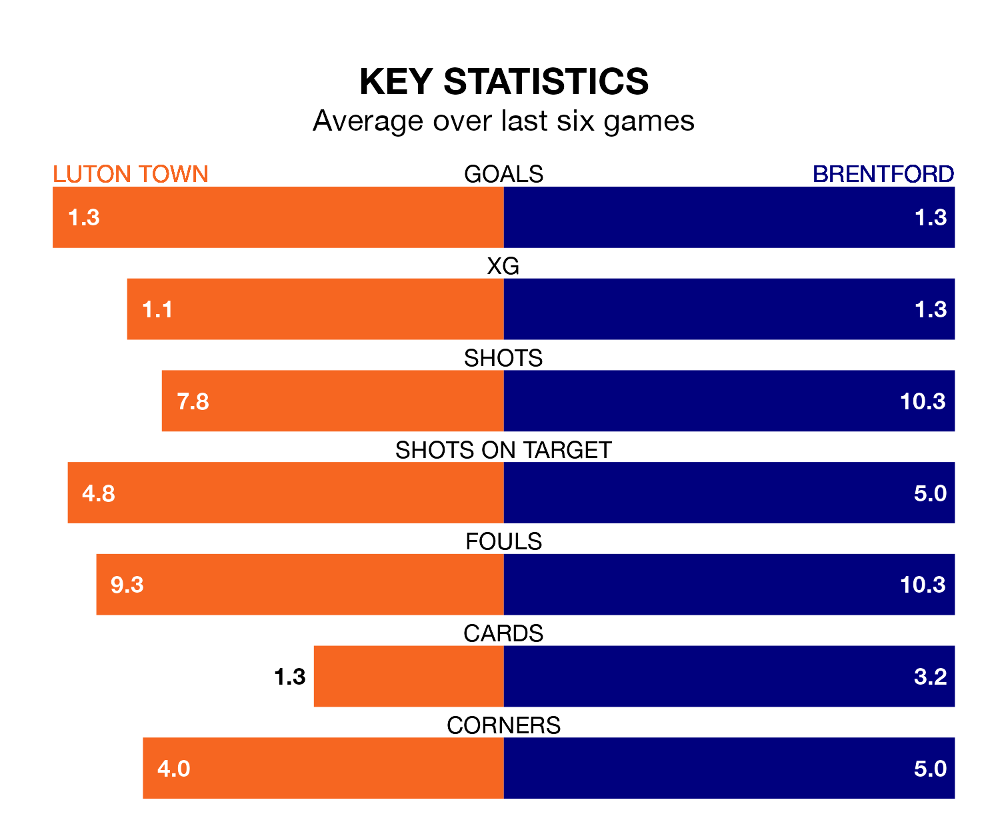

Luton Town are on a poor run ahead of hosting Brentford at Kenilworth Road on Saturday, with just four points collected from their last six games.
The Hatters have picked up one win and one draw in their last six Premier League games, and face a Bees side whose last six games have brought one win and three draws.
Luton are 18th in the table after 33 games, of which they have won six and drawn seven, earning 25 points.
Brentford are two places ahead of Town in 16th, with eight wins and eight draws putting them on 32 points.
With 46 goals in 33 games so far this season, the Hatters are scoring at below the league average rate with 1.4 goals per game. And they are conceding more than average, letting in 70 goals at a rate of 2.1 per game.
The Bees are also below average scorers, with 1.4 goals per game, compared to a league average of 1.6. They have conceded 1.8 goals per game.
In the last five years, Luton and Brentford have played each other on five occasions. Luton won one of them and Brentford the other.
On average, the Hatters scored 0.6 goals and the Bees 3.0 in those matches.
Their last meeting was on December 2, when Brentford won 3-1 at home.
Luton's last match was on April 13, a 5-1 loss against Manchester City, with Ross Barkley getting the goal for the Hatters.
Brentford beat Sheffield United 2-0 last time out, also on April 13, with Frank Onyeka and Ollie Arblaster (own goal) on the scoresheet.
Saturday's match will be refereed by Jarred Gillett, who has taken charge of 17 Premier League games so far this season, issuing two red cards and booking 80 players. He has awarded seven penalties.
The last Luton game Gillett refereed was a 2-1 away loss to Tottenham Hotspur on March 30. His last Brentford match was their 2-2 draw at home against Chelsea on March 2.
Updated: 15:40 (UTC), 18/04/24